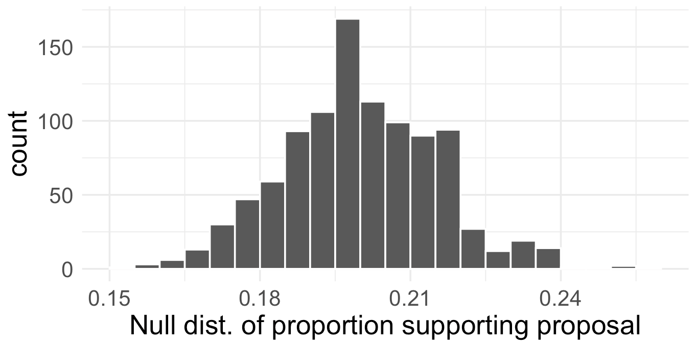
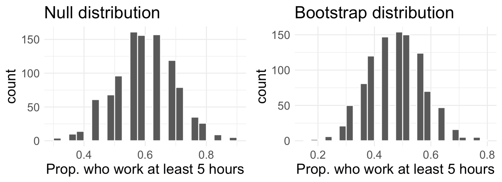
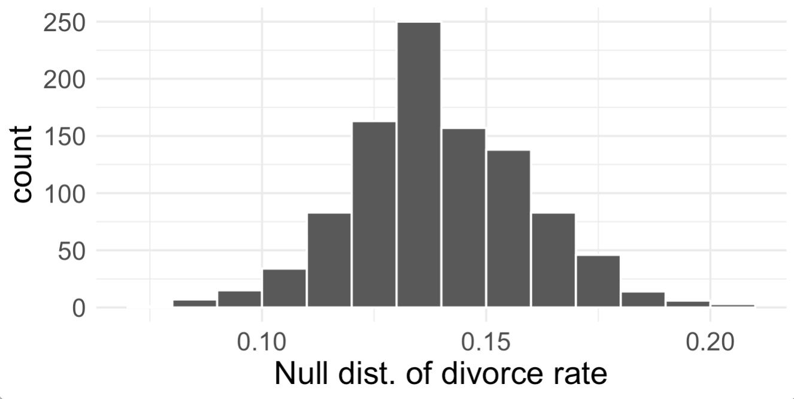

Hypothesis testing
For each of the research statements below, determine whether it represents a null hypothesis claim or an alternative hypothesis claim.
The number of hours that grade-school children spend doing homework predicts their future success on standardized tests.
King cheetahs on average run the same speed as standard spotted cheetahs.
For a particular student, the probability of correctly answer a 5-option multiple choice test is larger than 0.2 (i.e. better than guessing)
The probability of getting in a car accident is the same if using a cell phone then if not using a cell phone.
Write out the null and alternative hypotheses in words and also in statistical notation for each of the following situations. When writing in statistical notation, be sure to define quantities in context.
New York is known as “the city that never sleeps”. A random sample of 25 New Yorkers were asked how much they sleep they get per night. Does these data providing convincing evidence that New Yorkers on average sleep less than 8 hours per night?
A study suggests that 25% of 25 year-olds have gotten married. You believe that this is incorrect and decide to collect your own data to conduct a hypothesis test.
A Survey USA poll conducted in Seattle, WA in May 2021 reports that of the 650 respondents (adults living in this area), 159 support proposals to defund police departments.
A journals writing a news story on the poll results wants to use the headline: “More than 1 in 5 adults living in Seattle support proposals to defund police departments”. You caution the journalist that they should first conduct a hypothesis test to see if the poll data provide convincing evidence for this claim. Write the hypotheses for this test using proper notation, defining any necessary quantities.
Describe in words a simulation scheme that would be appropriate for this situation. Also describe how the p-value can be calculated using the simulation results.
The histogram below shows the distribution of 1000 simulated proportions under \(H_{0}\). Estimate the p-value using the plot and use it to evaluate your hypotheses (i.e. make a conclusion). Assume a significance level of 0.05.

\((^*)\) In a large university where 60% of the full-time students are employed at least 5 hours per week, the members of the Statistics Department faculty wonder if the same proportion of their students work at least 5 hours per week. They randomly sample 25 of their majors and find that 12 of the students work 5 or more hours per week.
Two sampling distributions were created to describe the variability in the proportion of statistics majors who work at least 5 hours per week: a null distribution and a bootstrap distribution. In both cases, \(B=1000\) simulations were generated.

Which distribution(s) was/were obtained by sampling with replacement, and which distribution(s) was/were obtained by sampling without replacement?
Estimate the standard error of the simulated proportions based on each distribution. Are the two standard errors you estimated roughly equal?
Using the appropriate histogram, test the claim that 70% of statistics majors, like their peers, work at least 5 hours per week. State the hypotheses, find the p-value, and conclude in the context of the problem. Use a significance level of 0.10.
Using the appropriate histogram, find a 90% bootstrap confidence interval for the true proportions of statistics majors who work at least 5 hours per week. Interpret the confidence interval in the context of the problem.
Briefly comment on how your conclusions in (c) and (d) compare.
A study conducted in 2020 found that the U.S. adjusted divorce rate was 14 per 1000 married women. Joe is suspicious and disagrees with the stated divorce rate. Joe somehow collected data from 323 married or previously-married women, and asked them if they had a divorce in 2020. 55 of the women responded that they indeed had a divorce in 2020.
Write out the hypotheses corresponding to this scenario.
Describe in words a simulation scheme that would be appropriate for this situation. Also describe how the p-value can be calculated using the simulation results.
The histogram below shows the distribution of 1000 simulated proportions under \(H_{0}\). Estimate the p-value using the plot and use it to evaluate Joe’s hypotheses (i.e. make a conclusion). Assume a significance level of 0.05.

Joe is some free time and also created a 90% bootstrap confidence interval for the divorce rate.
He obtained the following interval: (0.136, 0.204). Interpret this interval in context.
Based on this interval, would it be appropriate for Joe to conclude that the study’s reported rate was wrong? Explain your reasoning.
How do your conclusions from (c) and (e) compare?